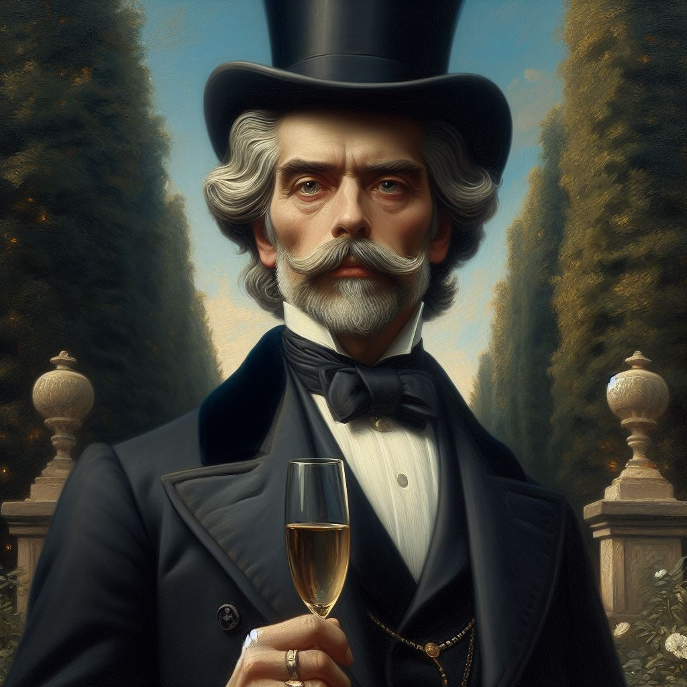
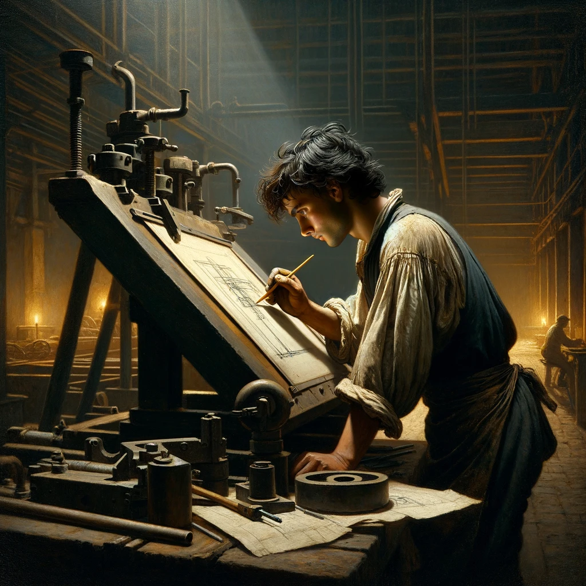
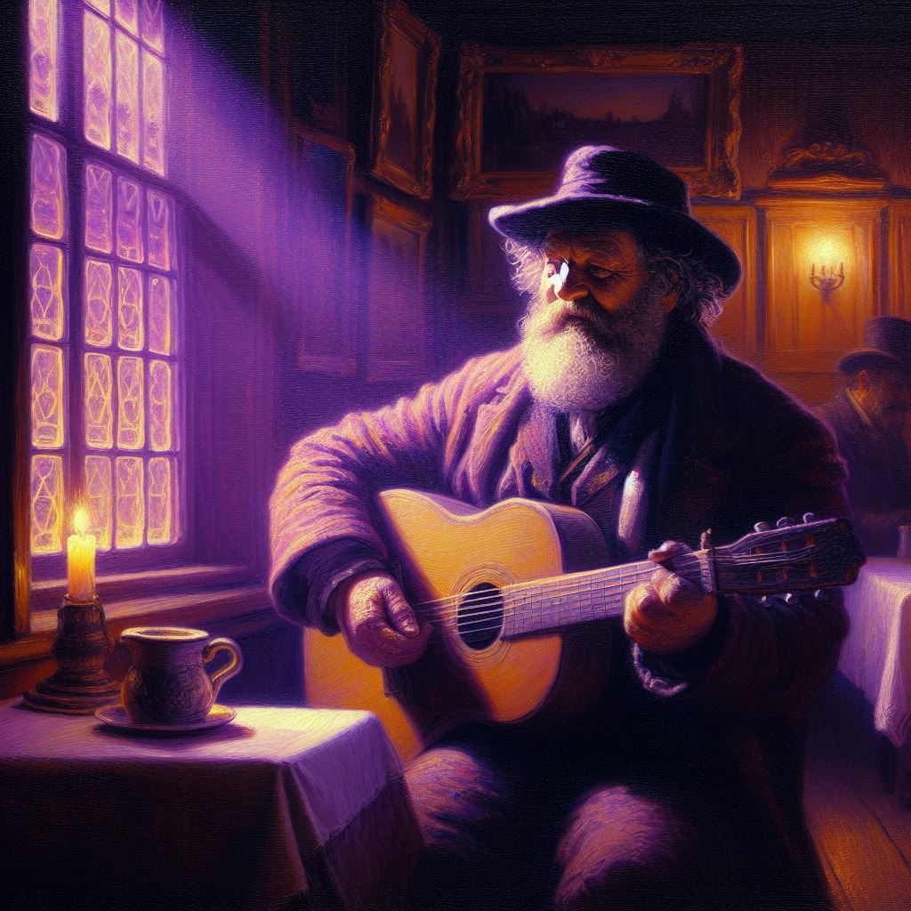
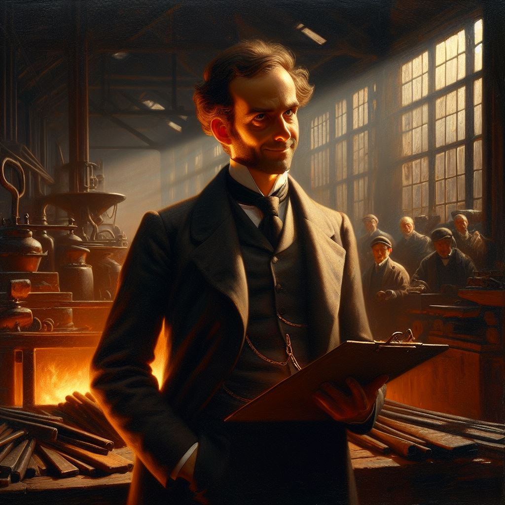
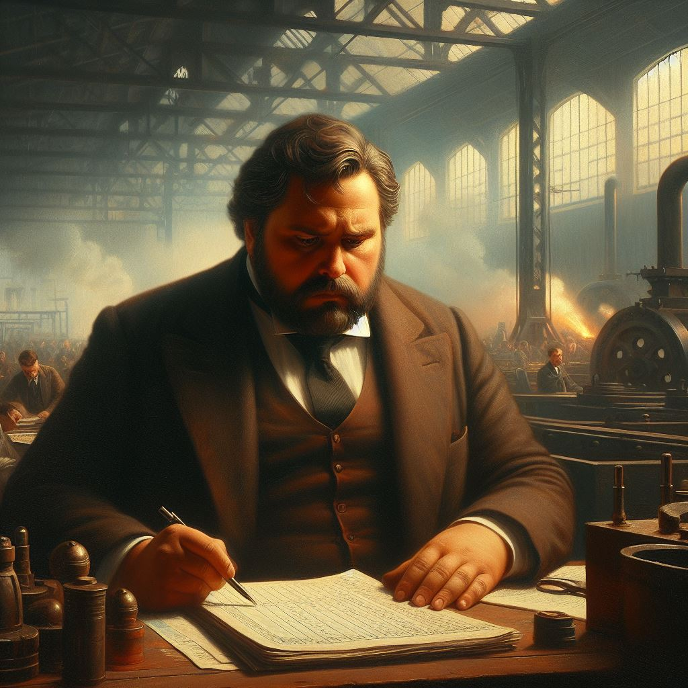
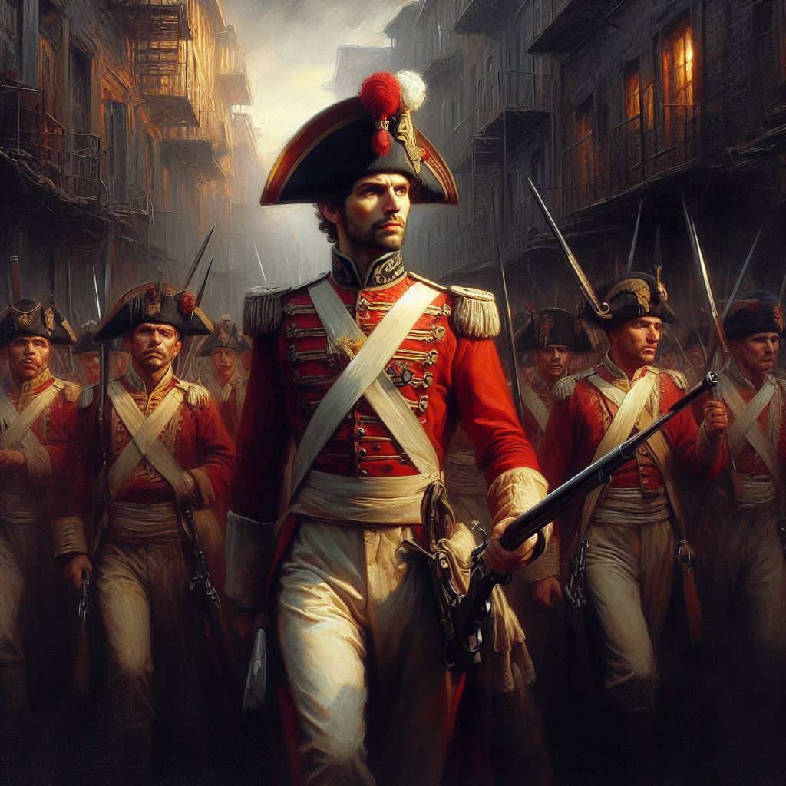

The Forbidden Continent
Characters
Caledane
Characters of national importance in Caledane.
King Henry III, the "Boy-King"
The King of New Caledane, born 1776. He was crowned as an infant, after the passing of his father King Godfrey, and was called "the Boy-King". Now 24, he has retained the nickname; it is usually used fondly.
His first act as king was to sail to Aldea to personally take command of the Little War, which had begun in 1791 with a series of stinging defeats. In 1792, at the age of sixteen, King Henry led his army to a hard-fought victory, the turning point on the path to victory. In the dusk of the day of the battle, he famously walked the camp and shook the hand of each man who had stood with him—an unprecedented gesture that cemented his reputation as the king of the people.
In 1795, the Friends of Society rebelled, and secured control of Caledane, establishing themselves as the Protectorate. King Henry was forced to flee across the ocean, along with a small group of supporters, and was welcomed with open arms in New Caledane. He now rules New Caledane as a reformer who is steadily giving away his power and his hereditary privileges.
If the Unbroken Thread has been cut, so be it. Let that loose thread become part of a greater cloth, one woven from all good folk of Caledane, and may it cover all of Aldea in glory.
Blueport
Characters of regional importance in Blueport and Falchester.
Duke Marcus of Falchester

Duke of the region which includes Blueport. Leader of the Friends of Society. Implicitly unfavorable to the workers, though a worker class consciousness does not yet exist as a political issue.
Assassinated during the massacre of Barleyvale.
Lord Andrew of Brownswell, Baronet
An owner of the Barleyvale Works, actually one of a consortium of shareholders. Visits the works a few times a year to review the books along with a team of accountants. Wears a tailcoat and a top hat, and a pocket watch with a chain, showing his alliance with the Friends of Society.
Narrowly escaped death during the explosion of violence after the Barleyvale Massacre. Occupies a position of power in the Protectorate, but is continually embattled, as the Friends of Society jockey for position in the new order.
Countess Ophelia of Blue River
An influential member of the Companions of the King in Blueport. An old friend of the king's advisor Duke Lloyd.
Holds a salon, as they like to say in Venetonne, where conservative intellectuals and nobles shudder in horror at the effects of so-called Progress upon the mythic fields of Caledane. She considers the civil war and the exile of the king "a blood sacrifice upon the altar of progress, and may the Golden Blade stand ready against the demons which might now be loosed!" As the leader of the minority faction in Parliament, she does what she can to mitigate the reign of the Protectorate.
Barleyvale
Characters introduced in the prologue adventure, The Throne and the Sword.
Morton Quayside, Arcanasmith
A hero of the Little War. Served directly under the king, even exchanged words with him once. Came home seven years ago with a medal made of real gold, and never sold it even in the bad years. A steady hand at the Works for years now. Recently finished his arcanasmith apprenticeship.
A clean-cut man in his twenties, with a ready smile.
Emmett Woodlawn, Molder Apprentice

The agitator. He went to school in Montaigne, or at least went to Montaigne and got drunk with students, and when his money ran out, he came back with a head full of ideas about collective action and the power of the poor over the rich. By day, he helps make the molds into which the iron is poured for bespoke work. By night, he is a regular presence at the Velvet Room, eager to discuss the politics of the day, especially the changing economic landscape and the wonders coming from New Caledane.
A thin but muscular man with a shock of messy black hair. Doesn't look like an intellectual until you hear him talk. Has a flair for poetic turns of phrase.
Killed in the Barleyvale Massacre.
Jaques "Old Turtle" Fletcher, Molder

Old-timer, musician, stabilizing influence. He argues back and forth with his apprentice Emmett about how fast things should change. Old ways are best sometimes; things are there for a reason. He would rather just play his music and make people laugh, or maybe shed a little tear.
A balding man in late middle age, but strong and vital. He and Emmett work big, and even with a block and tackle, moving those clay molds is not a job for weaklings.
Kevin Rockledge, Floor Manager

Likes to throw his weight around, a classic management bully. Always looking for an infraction so he can issue a report or a warning. At night, sometimes he patrols the outside of the shield-fence to scare away any vagrants or drunks who are sleeping too close to the factory. He's been seen shoving them into the fence to watch it knock them flat.
He especially keeps his eye on Brandon Sanclement, and has even followed him around the neighborhood at times. Like all management, Rockledge is not welcome at the Velvet Room. The one time he tried to show up and blend in, everyone left without a word, and Mrs. Broadleaf closed up shop without serving him.
Richard St. Angus, General Manager

The highest-ranking person who is present at the Works every day. The only one who has contact with the Owners. The workers see him as a outsider imposed upon them by inscrutable laws of nature; the Owners see him as a jumped-up tradesman.
Captain Lionel Blackhill

Army officer in command of the detail which stormed the Works. Veteran of the Little War, commanded the Barleyvale unit where Morton Quayside and John Nickelbrook served.
Now called the Butcher of Barleyvale for his role in the massacre. Even those who support the Friends of Society and their Protectorate generally condemn the massacre.